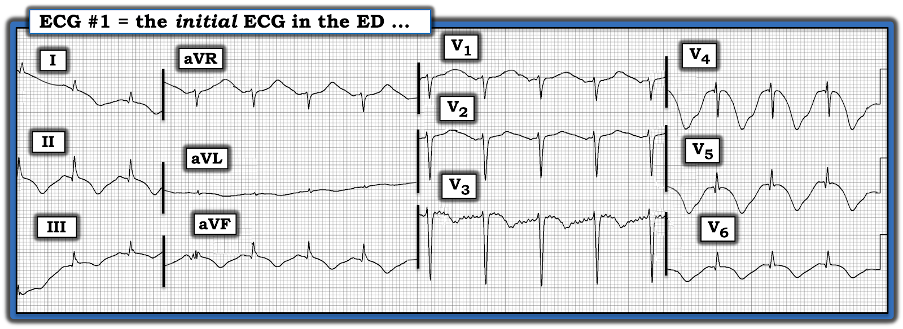
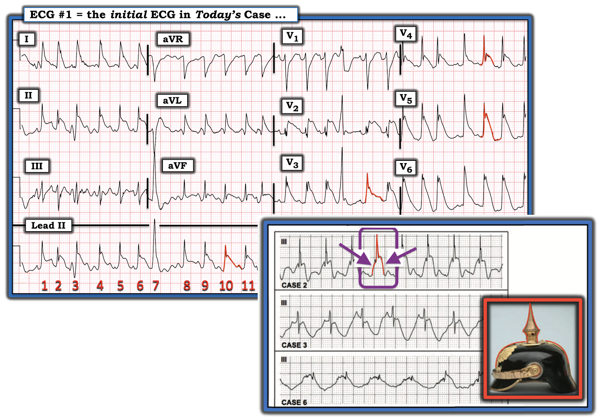
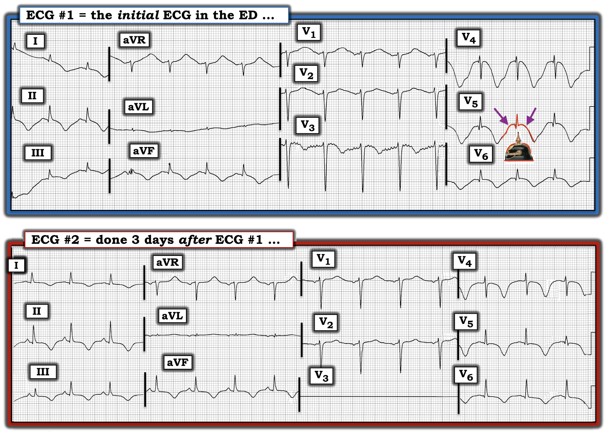
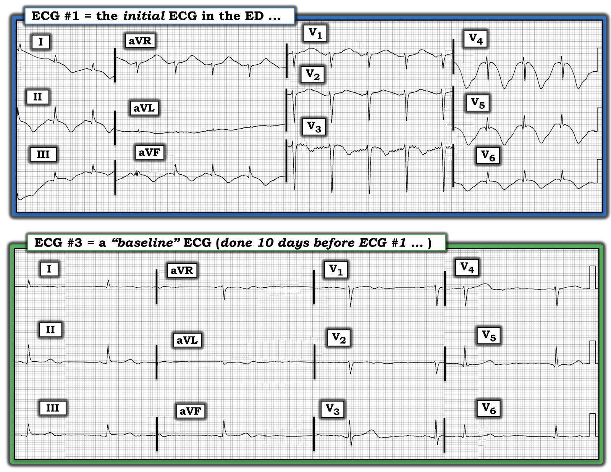

ECG Blog #310 — Một dấu hiệu "mũ" đặc biệt?
Một người đàn ông ngoài 40 tuổi, bệnh cấp tính nặng, được nhập viện. Chỉ cần nói rằng bệnh nhân đã được đặt nội khí quản — và có tổn thương đa cơ quan, bao gồm hậu quả của nghiện rượu nặng, lú lẫn, cân bằng dịch bấp bênh — và rối loạn chức năng thất đáng kể trên siêu âm tim (Echo). Điện tâm đồ ban đầu của bệnh nhân được trình bày ở Hình-1.
- Bạn sẽ diễn giải bản ghi ban đầu này như thế nào?


SUY NGHĨ CỦA TÔI về điện tâm đồ ban đầu ở Hình-1:
Nhịp ở điện tâm đồ #1 là nhịp xoang với tần số 90-95/phút (tức là, thấy một sóng P dương nhỏ nhưng chắc chắn có mặt ở chuyển đạo II — và sóng P xoang âm luôn thấy ở các chuyển đạo V1 và V2).
- Về các khoảng: Khoảng PR bình thường — và phức bộ QRS hẹp — nhưng QTc kéo dài rõ rệt (đặc biệt ở các chuyển đạo trước tim bên — QT chiếm ~2/3 khoảng R-R!).
- Trục mặt phẳng trán ở điện tâm đồ #1 bình thường (khoảng +60 độ).
- Không có lớn các buồng tim.
- Có sóng q nhỏ (có lẽ không có ý nghĩa) ở nhiều chuyển đạo (tức là, các chuyển đạo I,II,III,aVF; V4,V5,V6). Tăng tiến sóng R (R wave progression) hơi chậm (vùng chuyển tiếp (transition), nơi sóng R trở nên cao hơn độ sâu của sóng S — xảy ra giữa chuyển đạo V4 và V5).
- Hình dạng sóng ST-T rất đáng chú ý, ở chỗ đoạn ST có dạng vòm (dù không chênh lên đáng kể) ở nhiều chuyển đạo — kèm sóng T đảo ngược lan tỏa, rộng và cực kỳ sâu.
- Đặc biệt ở các chuyển đạo V4,V5,V6 (nhưng cũng ở một số chuyển đạo chi) — tôi thấy khó xác định đường nền nằm ở đâu!
NHẬN ĐỊNH của tôi về điện tâm đồ #1: Nhịp xoang — QRS hẹp, nhưng khoảng QTc kéo dài rõ rệt — ST dạng vòm (ST coving) lan tỏa (nhưng có lẽ không phải ST chênh lên đáng kể) kèm sóng T đảo ngược rộng, sâu và đối xứng — với một hình ảnh rất bất thường, trong đó khó xác định đường nền nằm ở đâu.
- Bắt đầu với điều mà điện tâm đồ #1 "không" phải — tôi không diễn giải bản ghi này là gợi ý nhồi máu cấp.
- Thay vào đó — QTc kéo dài rõ rệt — kèm các bất thường sóng ST-T lan tỏa (ST dạng vòm; sóng T đảo ngược sâu, rộng và đối xứng) không quy được cho bất kỳ vùng giải phẫu cụ thể nào, rất gợi ý Bệnh cơ tim Takotsubo (Xem ECG Blog #46 — để bàn luận đầy đủ về bệnh lý này). Tình trạng bệnh cấp tính nặng của bệnh nhân hôm nay, cùng với báo cáo rối loạn chức năng thất đáng kể trên siêu âm tim, chắc chắn có thể phù hợp với Takotsubo (Rõ ràng — cần các chi tiết cụ thể của siêu âm tim để xác định các dấu hiệu này có hay không có giá trị chẩn đoán Takotsubo).
- ĐIỀU CỐT LÕI: Ngoài nghi ngờ bệnh cơ tim Takotsubo — tôi nghĩ điện tâm đồ #1 rất gợi ý dấu hiệu mũ chóp nhọn (Spiked Helmet Sign).
BẠN có nhận ra Dấu hiệu Mũ Chóp nhọn?
Chủ đề chung của ca hôm nay, liên quan đến bệnh nhân mắc bệnh đa hệ cơ quan nặng này, với việc cân nhắc bệnh cơ tim Takotsubo và dấu hiệu mũ chóp nhọn — là catecholamine tăng cao!
- Được Littman mô tả lần đầu năm 2011 (Letter to Mayo Clin Proc: 86 (12): 1245, 2011) — dấu hiệu mũ chóp nhọn (Spiked Helmet Sign = SHS) là một dấu hiệu điện tâm đồ hiếm gặp và độc đáo, gặp ở bệnh nhân bệnh nặng nguy kịch cấp tính (như mô tả trong ca hôm nay). Dấu hiệu này thường đi kèm tỷ lệ tử vong cao. Ngoài nhồi máu cơ tim cấp diện rộng, bệnh cơ tim Takotsubo và ngừng tim — các bệnh lý khác đã được ghi nhận có liên quan đến SHS gồm xuất huyết nội sọ, nhiễm khuẩn huyết, rối loạn chuyển hóa nặng. Chắc chắn nhiều bệnh lý hồi sức khác sẽ được bổ sung vào danh sách này — khi dấu hiệu điện tâm đồ quan trọng này được nhận biết rộng rãi hơn.
- Như thể hiện ở hình chèn phía dưới bên phải của Hình-2 — tên gọi của hình ảnh “vòm-và-gai” (“dome-and-spike”) này bắt nguồn từ Pickelhaube, một loại mũ có chóp nhọn mà binh lính Phổ và Đức, cũng như cảnh sát và lính cứu hỏa, đội vào thế kỷ 19 và 20. (Nghĩa đen của “Pickelhaube” trong tiếng Đức = “pointe” hay “pickaxe” (cuốc chim) cho Pickel — và “bonnet” (mũ) cho Haube.).


Các Dấu hiệu điện tâm đồ của mũ chóp nhọn:
- Như Crinion, Abdollah & Baranchuk mô tả (Circulation 141:2106 — ngày 23 tháng 6 năm 2020) — đoạn QRS-ST với dấu hiệu mũ chóp nhọn có đặc trưng là 3 thành phần đặc hiệu: i) Đường đẳng điện chênh lên ít nhiều, bắt đầu trước phức bộ QRS (tức là, tạo nên nửa đầu của chiếc mũ); ii) Tiếp theo là sóng R dốc lên đứng (tức là, “chóp nhọn” (“spike”) của chiếc mũ); và cuối cùng; iii) ST chênh lên dạng vòm ở các mức độ khác nhau, có thể giống nhồi máu cơ tim cấp có ST chênh lên (tức là, nửa sau của chiếc mũ).
- Một, hai, hoặc cả 3 thành phần này có thể thấy ở một hoặc nhiều chuyển đạo trên điện tâm đồ. Mặc dù các báo cáo ban đầu chỉ ghi nhận dấu hiệu này ở các chuyển đạo dưới — bất kỳ chuyển đạo nào trong 12 chuyển đạo của điện tâm đồ cũng có thể bị ảnh hưởng!
- ĐIỂM THEN CHỐT (PEARL) #1: Cơ chế được đề xuất của dấu hiệu mũ chóp nhọn (SHS) rất thú vị — cụ thể là tình trạng cường adrenergic với kéo dài tái cực qua trung gian adrenergic. Lý do đường đẳng điện chênh lên bắt đầu trước phức bộ QRS — có thể do cơ chế sinh lý bệnh tương tự như trong các tình trạng QT (và/hoặc QU) kéo dài rõ rệt — với sóng T và sóng U muộn và lớn chồng lên phần đầu của QRS. Các đặc điểm khác chung với các tình trạng dư thừa catecholamine nội sinh (như hội chứng QT dài, bệnh cơ tim Takotsubo và xuất huyết hệ thần kinh trung ương (CNS)) — bao gồm xoắn đỉnh (Torsades de Pointes), sóng T luân phiên (T wave alternans) và ST chênh lên giả-nhồi máu.
- ĐIỂM THEN CHỐT (PEARL) #2: Như đã nêu ở trên, dấu hiệu mũ chóp nhọn (SHS) có thể gây ST chênh lên rất dễ bị nhầm với STEMI cấp. Tuy nhiên, thường có thể phân biệt với STEMI bằng cách nhận ra sự dịch chuyển lên trên của đường đẳng điện bắt đầu trước phức bộ QRS — và thường gần như “thẳng hàng” với đoạn ST chênh lên thấy sau QRS. Đặc điểm phân biệt này được minh họa rõ nhất trong hình chữ nhật màu TÍM ở hình chèn chiếc mũ chóp nhọn phía dưới bên phải của Hình-2.
- Bằng chứng ủng hộ thêm rằng kiểu ST chênh lên của SHS không phải do nhồi máu cấp có thể đến từ: i) Phân bố không điển hình của các thay đổi đoạn QRS-ST trên điện tâm đồ 12 chuyển đạo; và, ii) Không có kiểu tiến triển điển hình của các thay đổi điện tâm đồ như gặp trong STEMI thực sự.
- Bản ghi ở phần trên của Hình-2 lấy từ ECG Blog #299. Tôi đã khoanh viền màu ĐỎ các đặc điểm của dấu hiệu mũ chóp nhọn thấy ở một số chuyển đạo của điện tâm đồ này. Mặc dù phải thừa nhận thành phần chênh lên trước QRS của SHS khá kín đáo — Chẳng phải hình ảnh các gai nhọn kèm ST chênh lên rõ rệt và dạng vòm thấy ở nhiều chuyển đạo thật ấn tượng sao?
Dấu hiệu mũ chóp nhọn trong CA BỆNH hôm nay:
Để rõ ràng, ở Hình-3 — tôi đặt điện tâm đồ ban đầu của ca hôm nay cạnh một điện tâm đồ theo dõi ghi 3 ngày sau trên bệnh nhân này. Tình trạng lâm sàng của bệnh nhân đã cải thiện vào thời điểm ghi điện tâm đồ #2, dù ông vẫn còn bệnh rất nặng.
- NHỮNG chuyển đạo NÀO trên điện tâm đồ ban đầu ( = điện tâm đồ #1) — thể hiện rõ nhất dấu hiệu mũ chóp nhọn?
- Bạn thấy khác biệt gì ở Hình-3 giữa điện tâm đồ ban đầu — và điện tâm đồ #2, được ghi 3 ngày sau, khi bệnh nhân đã có dấu hiệu cải thiện lâm sàng?


TRẢ LỜI:
- Trên điện tâm đồ ban đầu — dấu hiệu mũ chóp nhọn thấy RÕ NHẤT ở các chuyển đạo trước tim bên (các chuyển đạo V4,V5,V6) — nhưng cũng gợi ý ở các chuyển đạo II và aVF. "Hình ảnh soi gương" của dấu hiệu này thấy ở chuyển đạo aVR.
- Để rõ ràng — tôi đã khoanh viền màu ĐỎ 3 thành phần của chiếc mũ chóp nhọn ở chuyển đạo V5 của điện tâm đồ #1: i) Đường đẳng điện chênh lên bắt đầu trước phức bộ QRS (mũi tên TÍM thứ 1 — tạo nên nửa đầu của chiếc mũ); ii) Sóng R dốc lên đứng (tức là, "chóp nhọn" của chiếc mũ); và, iii) ST chênh lên dạng vòm sau QRS (tức là, mũi tên TÍM thứ 2 — tạo nên nửa sau của chiếc mũ). Lưu ý rằng điểm khởi đầu của ST chênh lên gần như "thẳng hàng" với điểm cao nhất của đoạn chênh lên trước QRS.
- Trên điện tâm đồ theo dõi (tức là, điện tâm đồ #2, ghi 3 ngày sau) — tần số tim, trục mặt phẳng trán và hình thái QRS ở hầu như mọi chuyển đạo đều tương tự (ngoại trừ đường thẳng ở chuyển đạo V3 do mất kết nối điện cực). QTc dài rõ rệt, ST dạng vòm và sóng T đảo ngược rộng, sâu, lan tỏa vẫn tồn tại — nhưng đường nền đẳng điện đang trở lại! Kết quả là — dấu hiệu mũ chóp nhọn rõ ràng không còn hiện diện trên điện tâm đồ #2.
Bản ghi CUỐI CÙNG trong CA BỆNH hôm nay:
Điều tôi thấy thú vị nhất ở các điện tâm đồ trong ca hôm nay — là các biểu hiện điện tâm đồ ở điện tâm đồ #1 đã xuất hiện nhanh đến mức nào.
- Bệnh nhân đã được khám 10 ngày trước đó vì một bệnh nhẹ hơn. Một điện tâm đồ đã được ghi lúc đó ( = điện tâm đồ #3 ở Hình-4). BẠN nghĩ sao?


SUY NGHĨ CỦA TÔI về Hình-4:
Điện cực V3 trên bản ghi "nền" ghi 10 ngày trước đó — có lẽ đã bị đặt sai vị trí (tức là, sóng R tăng đột ngột từ chuyển đạo V2 sang V3 — rồi biên độ sóng R giảm đột ngột tương tự từ V3 sang V4 là không hợp lý về mặt sinh lý). Dù vậy — trục mặt phẳng trán và hình thái QRS ở các chuyển đạo khác tương tự nhau giữa 2 bản ghi. Nhưng mọi thứ khác đều khác biệt!
- Nhịp ở điện tâm đồ #3 — cho thấy nhịp chậm xoang rõ rệt và loạn nhịp, với một PAC ở gần cuối bản ghi.
- Với tần số chậm như vậy — QTc có lẽ kéo dài không quá mức tối thiểu.
- Sóng ST-T dẹt lan tỏa — không có sóng T đảo ngược.
- Đường nền đẳng điện phẳng trong suốt toàn bộ bản ghi.
CA BỆNH hôm nay: Tổng Hợp Lại Toàn bộ:
Việc xem bản ghi "nền" từ 10 ngày trước đó mang lại rất nhiều hiểu biết.
- "Chủ đề" của các thay đổi điện tâm đồ trong ca hôm nay là "tăng vọt catecholamine"! Trong khoảng 10 ngày — điện tâm đồ của bệnh nhân này đã tiến triển một cách ngoạn mục do tình trạng dư thừa catecholamine được cho là bắt nguồn từ bệnh cấp tính nặng (với tổn thương đa cơ quan và cần thở máy kéo dài) — bao gồm hội chứng cai rượu, lú lẫn nghi do bệnh não Wernicke — và có thể là bệnh cơ tim Takotsubo (tức là, "do stress").
- Biểu hiện điện tâm đồ thứ 1 của dư thừa catecholamine — là tăng tần số tim đáng kể so với nhịp chậm ở bản ghi trước đó.
- ĐIỂM THEN CHỐT CẦN NHỚ: Hình ảnh điện tâm đồ trên bản ghi ban đầu (điện tâm đồ #1 ở Hình-4) — cho thấy QTc kéo dài rõ rệt và ST dạng vòm lan tỏa kèm sóng T đảo ngược rộng, sâu, nhưng không theo phân bố giải phẫu cụ thể nào. Hình ảnh điện tâm đồ này cần ngay lập tức gợi ý khả năng bệnh cơ tim Takotsubo. Việc mất đường nền đẳng điện ở nhiều chuyển đạo sẽ giúp dễ nhận ra 3 thành phần của dấu hiệu mũ chóp nhọn (khoanh viền ĐỎ ở chuyển đạo V5 của Hình-3). "Chủ đề" chung của việc tăng tần số tim và các dấu hiệu điện tâm đồ này là catecholamine tăng vọt — điều này hoàn toàn phù hợp với biểu hiện lâm sàng của bệnh nhân hôm nay.
==============================
Lời cảm ơn: Xin cảm ơn Jean Max Figueiredo (từ Nova Iguaçu, Brazil) đã chia sẻ ca bệnh và bản ghi này.
==================================
Các bài ECG Blog liên quan đến ca hôm nay:
- ECG Blog #185 — Ôn lại hệ thống đọc nhịp của tôi, theo cách tiếp cận Ps, Qs & 3R.
- ECG Blog #205 — Ôn lại cách tiếp cận hệ thống của tôi để đọc điện tâm đồ 12 chuyển đạo (trình bày ở Hình-2 và -3, và là chủ đề của Audio Pearl MP-23-LINK trong Blog #205).
- ECG Blog #299 — Ôn lại một ca ST chênh lên vây cá mập (Shark Fin) kèm Dấu hiệu Mũ Chóp nhọn — do một thảm họa hệ thần kinh trung ương (CNS) (xuất huyết dưới nhện).
- ECG Blog #46 — Ôn lại một ca (và các dấu hiệu điện tâm đồ MẤU CHỐT) của Bệnh cơ tim Takotsubo.
- ECG Blog #59 — Ôn lại một ca sóng T khổng lồ.
======================